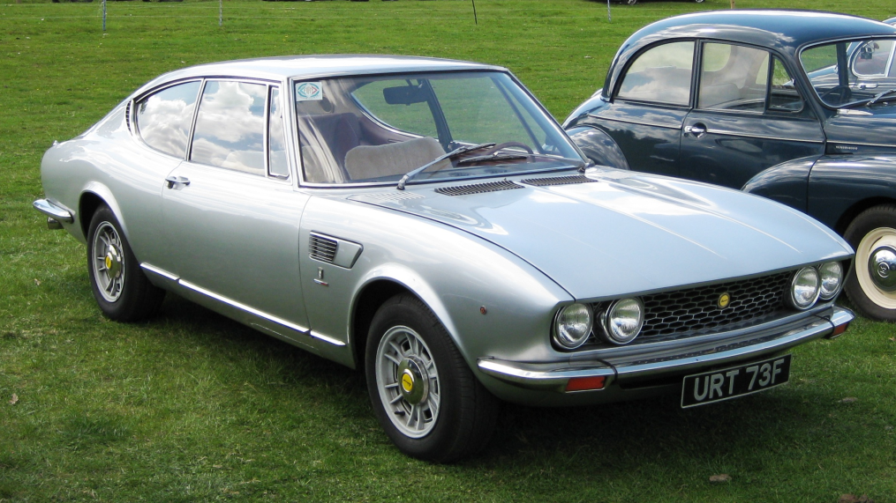

Top
Top
Coches més parlats...
Un llistat dels cotxes més nombrats dins dels posts públicats en la nostre web:
DeLorean DMC-12
El DeLorean DMC-12 és un automòbil esportiu fabricat per DeLorean Motor Company (DMC) entre 1981
i 1982. És conegut com «el DeLorean», ja que aquest va ser l'únic model que va fabricar aquesta
companyia. El DMC-12 es caracteritza per les seves portes d'ala de gavina i la seva carrosseria
metàl·lica d'acer inoxidable (sense pintura).
És summament conegut per la seva aparició en la trilogia de pel·lícules de Back to the Future.
Després d'aparèixer en aquestes tres pel·lícules, el DMC-12 es va convertir en un objecte de culte.
Tesla Cybertruck

El Tesla Cybertruck és un vehicle comercial lleuger elèctric de 4 portes i 6 places del fabricant estatunidenc Tesla Motors presentat el novembre de 2019. Es van anunciar tres versions amb autonomies de 400 a 800 km i acceleracions de 0 a 100 km/h entre 2,9 i 6,5 segons. L'objectiu de Tesla amb el desenvolupament del Cybertruck és proporcionar un substitut sostenible per als 6500 pickups que es venen cada dia als Estats Units.
Fiat Dino
El Fiat Dino (tipus 135) era un cotxe esportiu de tracció davantera amb motor davanter produït per Fiat del 1966 al 1973. El nom Dino fa referència al motor Ferrari Dino V6, produït per Fiat i instal·lat als cotxes per ACONSEGUIR el nombres de producció suficients perquè Ferrari homologui el motor de les carreres de Fórmula 2.
Mercedes Benz 190E

El Mercedes Benz 190I és un automòbil de luxe de l'segment D, fabricat entre els 1982 i 1993. Va ser nomenat per la premsa com "BabyBenz". Va ser molt popular a Europa però als Estats Units la recepció va ser molt pobre. Aquest cotxe va ser produït per competir en les DTM o Campionat Alemany de Turismes, ja que en anys posteriors Mercedes va provar de competir en altres categories amb uns resultats molt pobres.
Aquesta berlina lleugera arribo a tenir 204cv amb una velocitat màxima de 235km / h i amb una acceleració de 0-100km / h en 7,5 segons.